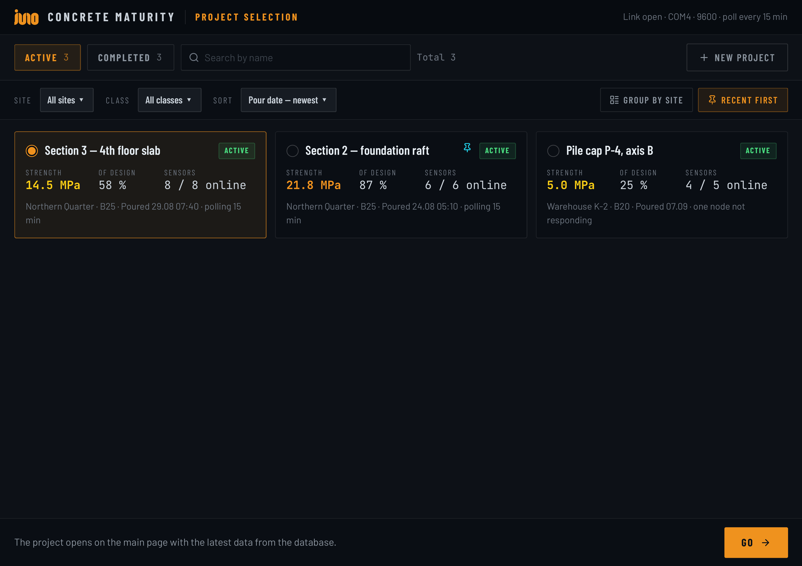
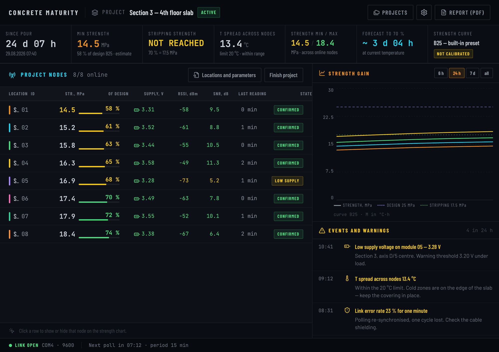
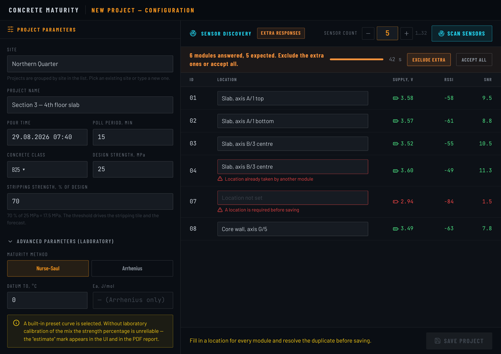
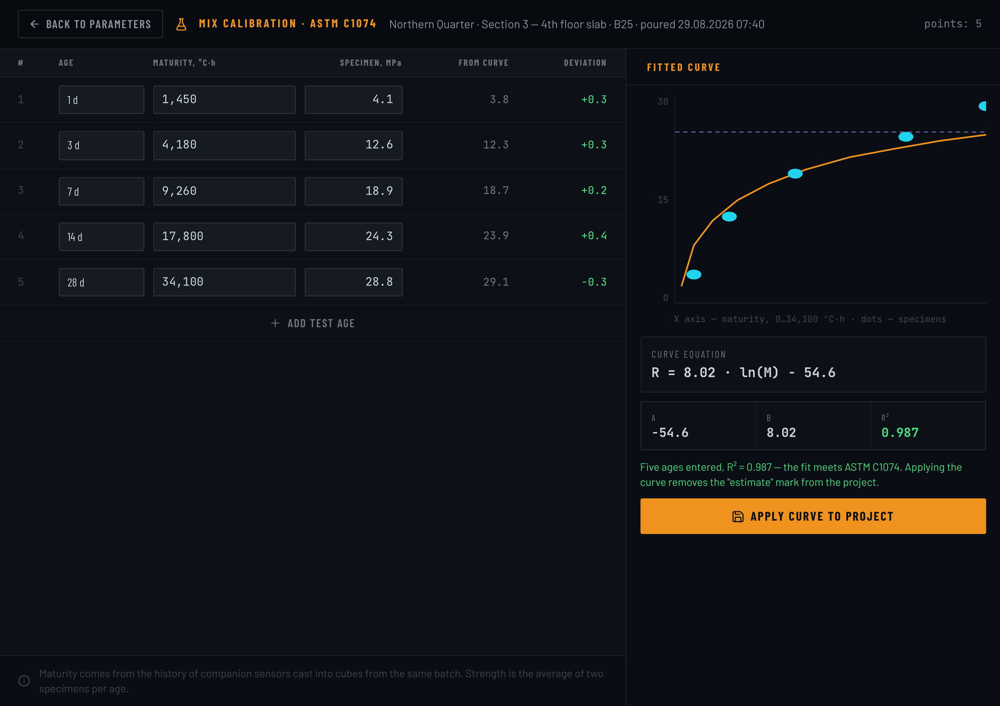
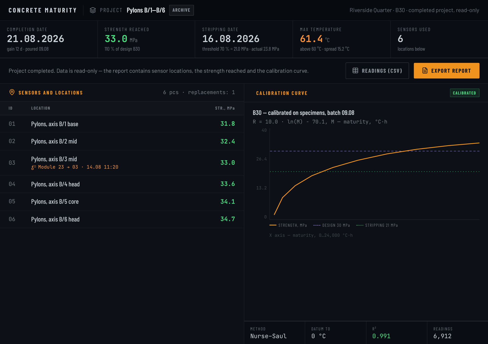
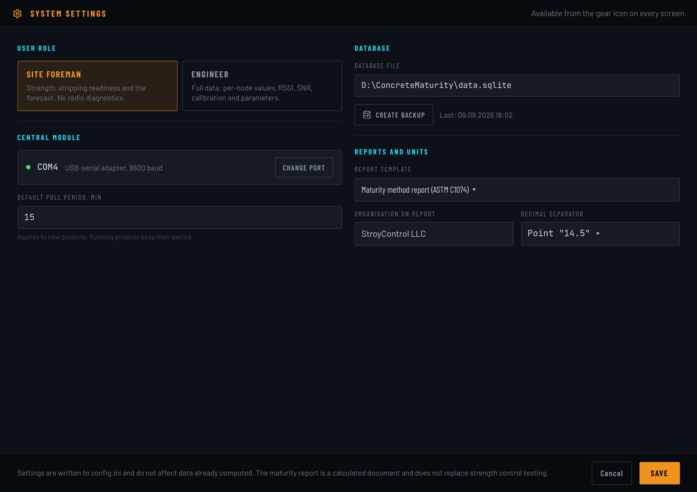

UI SAMPLE
This is a concrete-strength monitoring app for a hardware startup — sensors report temperature from inside a concrete pour, and the app turns that into a live strength reading and a dashboard a site crew can actually use. Sharing it here as an example of basic UI work: layout, data-heavy screens, and a simple flow from setup to report.
Overview of active pours — status, strength, sensors online at a glance.

The main screen — sensor readings, a strength-over-time chart, and an event log.

A short form flow for starting a new pour and connecting its sensors.

A focused screen for one task: entering test results and fitting a curve.

A finished project, laid out as a simple read-only summary and export.

Basic settings screen with role switching and a couple of config fields.
